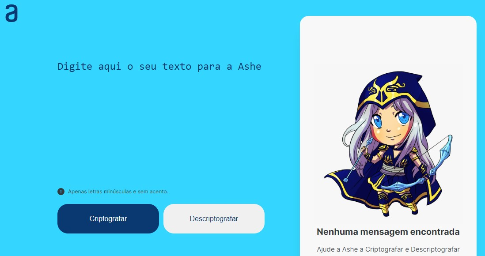

Projetos


Decodificador de Texto
Esta aplicação desenvolvida com HTML5, CSS3 e JavaScript, tem a função de codificar e decodificar mensagens de texto de formato simples e simultâneo.
Ver Projeto
Portfólio V.1
Projeto do primeiro portfólio pessoal desenvolvido com as tecnologias HTML e CSS.
Ver Projeto